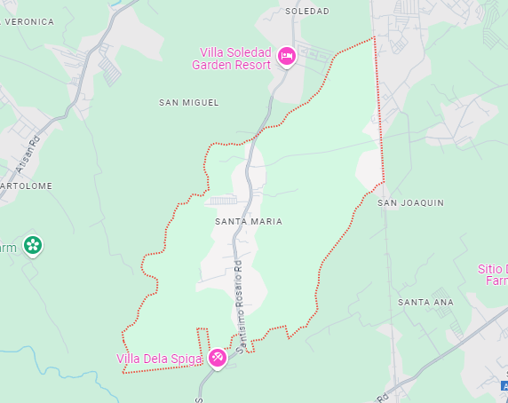

About Us
Barangay Sta. Maria is a vibrant community dedicated to serving its residents with pride and commitment. We aim to foster a strong sense of community while providing essential services that enhance the quality of life for all residents.
Our Mission
To promote the welfare of our residents through effective governance, community participation, and the delivery of essential services.
Our Vision
A united and thriving community that empowers its members and promotes sustainable development.
Contact Information
Address: Barangay Sta. Maria, City of San Pablo, Laguna, 3000
Email: barangay.stamaria@gmail.com
Phone: +63 123 456 7890
Website: www.barangaystamaria.gov.ph
